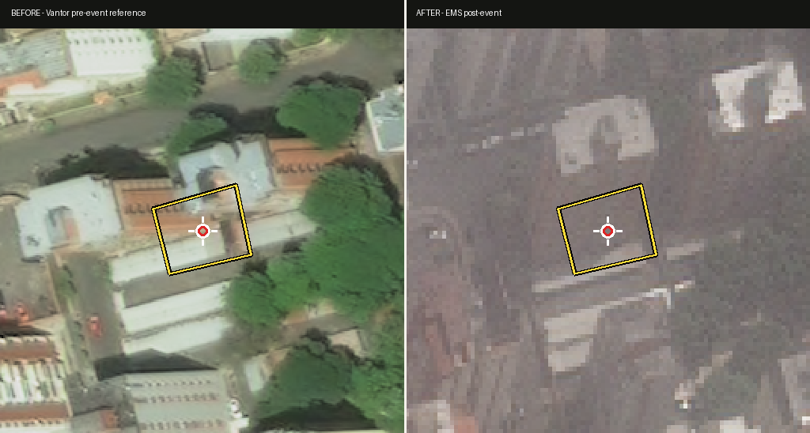
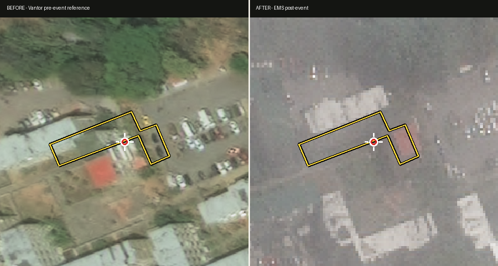
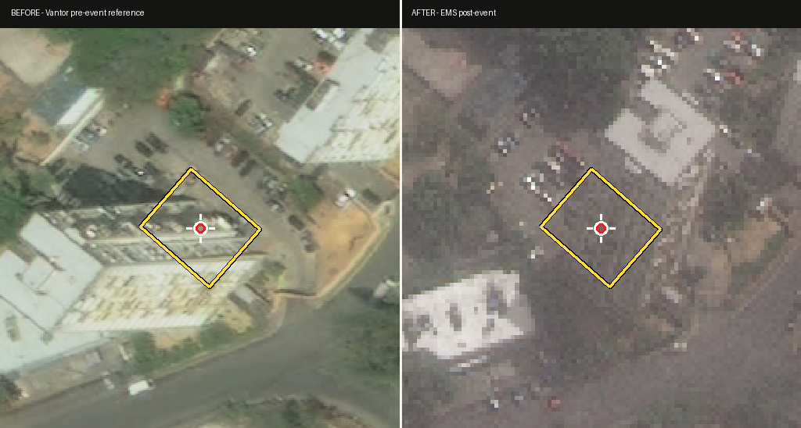
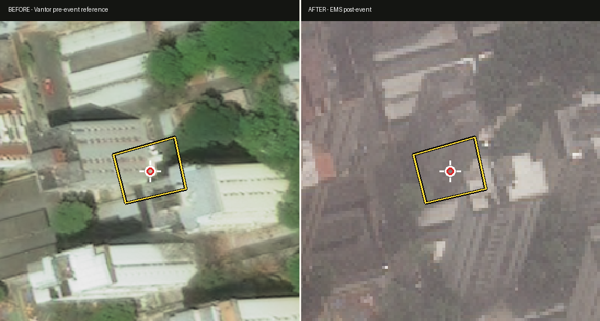
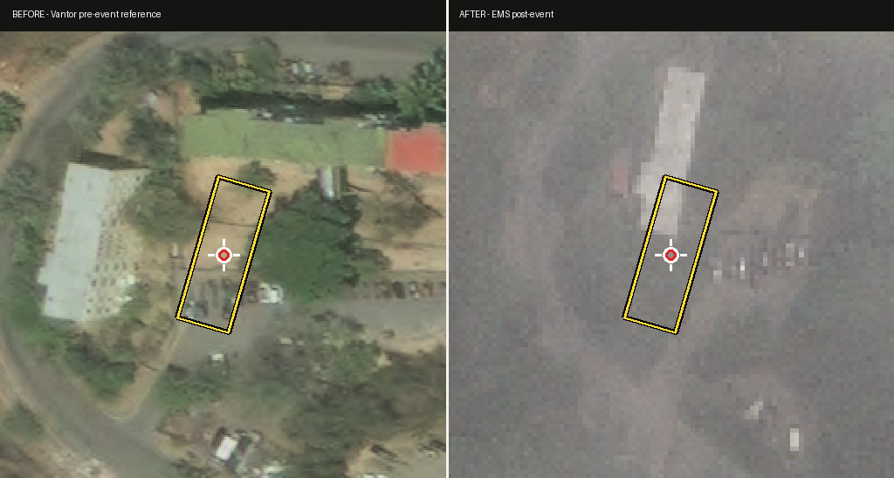
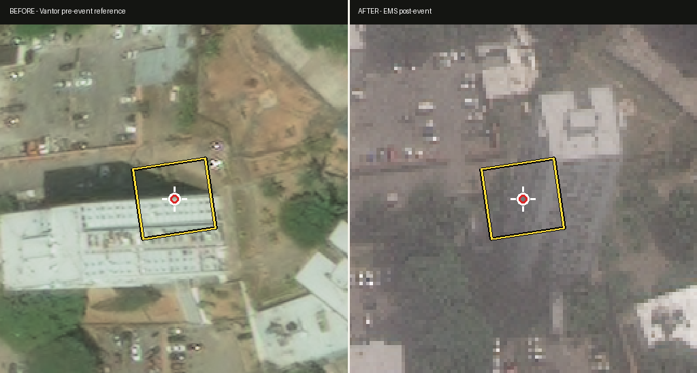
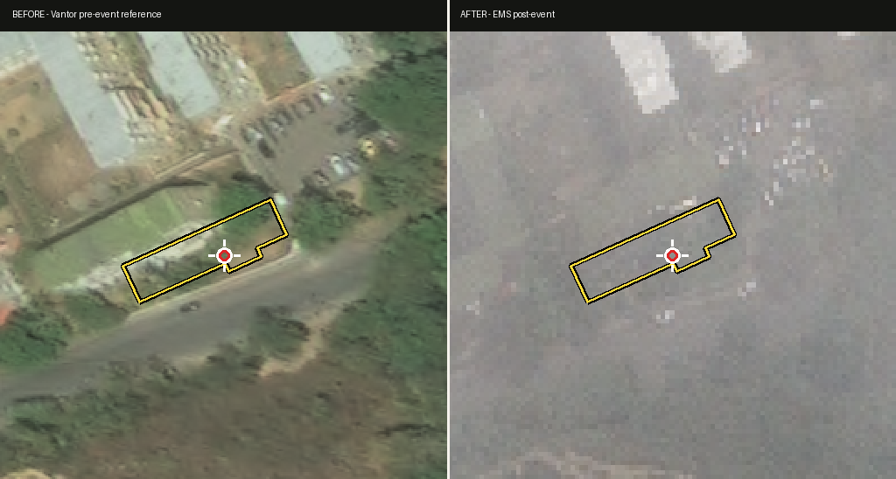
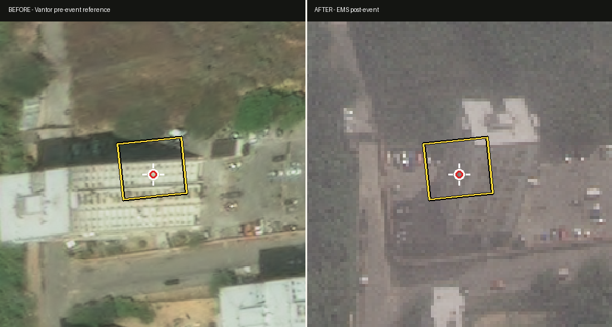

Prior: likely_destroyed · agreement: agree
Google Maps
Why: The pre-event Vantor imagery shows a clearly standing multi-story building with a distinctive orange/terracotta roof and sharp edges. In the post-event Copernicus EMS imagery, no standing building structure, roof, or walls are visible within the yellow footprint. The footprint area shows a lighter-toned patch with irregular texture consistent with rubble or a leveled footprint, surrounded by ground. The complete disappearance of a clearly visible building is strong evidence of major damage or destruction, warranting urgent human review despite the resolution limitations.
Uncertainty: The post-event Copernicus EMS imagery is severely low-resolution and pixelated compared to the pre-event Vantor imagery, which makes it difficult to confirm debris field extent, distinguish rubble from bare ground, or rule out partial collapse with standing remnants. Sensor and seasonal differences further complicate direct comparison.
Prior: likely_destroyed · agreement: downgrade
Google Maps
Why: The before image shows a clearly defined multi-story apartment building with a visible white/light roof, while the after image shows the same footprint area with no clear building structure—only dark ground with some lighter patches that could be debris or partial remains. The contrast is significant enough to indicate major damage or destruction, but the post-event imagery is too coarse, hazy, and low-resolution to distinguish between complete destruction, severe structural collapse, and merely obscured/buried remains. Urgent review is not warranted because the imagery quality itself is the limiting factor—sending a reviewer the same low-resolution chip would not resolve the ambiguity.
Uncertainty: Low spatial resolution, haze, and likely sensor/sun-angle differences in the Copernicus EMS post-event image prevent confirmation of whether the building is fully destroyed versus partially collapsed or obscured by debris/dust. The prior VLM's confidence of only 0.55 already reflects this same ambiguity.
Prior: likely_destroyed · agreement: agree
Google Maps
Why: The pre-event Vantor image shows a clear, intact multi-story apartment block (Bloque 5) with a continuous light-colored roof and visible structural footprint. In the post-event Copernicus EMS image, the building's recognizable roofline and structural geometry are gone, replaced by an irregular debris/soil mound that broadly fills the OSM footprint and is roughly congruent with the original building's mass. The spatial co-registration of debris to the original footprint, combined with the apparent presence of small response vehicles nearby, supports a destroyed classification. This is actionable because the change is large enough to overcome the resolution and tonal differences between the two sensors.
Uncertainty: The post-event Copernicus EMS chip is markedly lower resolution and has a hazier, more muted color palette than the Vantor reference, which complicates confident interpretation of the interior texture of the debris pile. A rubble mound, a partial pancake collapse, or simply a heavily disturbed/eroded surface could all produce a similar low-res appearance. There is also minor perspective/rotation drift between the two panels, so I cannot fully rule out a small alignment mismatch contributing to the footprint mismatch.
Prior: likely_destroyed · agreement: downgrade
Google Maps
Why: The pre-event image clearly shows an intact multi-story apartment building with a distinctive red/orange roof within the Z-shaped footprint. The post-event image shows a fundamentally transformed footprint area with no visible roof, altered ground texture with light-toned patches suggestive of debris, and loss of the structural outline. The change is unambiguous and severe, warranting human follow-up. However, the post-event Copernicus EMS imagery is markedly lower resolution, hazy, and has different sensor characteristics, preventing confident classification as fully destroyed versus heavily damaged with partial structure remaining.
Uncertainty: Post-event image resolution and atmospheric haze obscure whether the building is completely reduced to rubble or whether some structural elements (walls, partial floors) remain standing. The light-toned patches within the footprint are ambiguous - they could be debris fields, cleared ground with scattered rubble, or remnants of lighter-colored building materials. Cannot rule out that some substructure persists beneath debris.
Prior: likely_destroyed · agreement: agree
Google Maps
Why: The pre-event image shows a clearly intact cross/plus-shaped apartment building with a distinctive white roof occupying the outlined footprint. In the post-event image, the same footprint area shows no visible building structure or roof — only ground-toned pixels consistent with cleared land or debris, while adjacent buildings to the northeast remain visible. The complete disappearance of a large, distinctively-roofed building within an otherwise undamaged neighborhood is strong evidence of total destruction. However, the post-event image is significantly lower resolution and pixelated, which limits confidence in fine-grained observation.
Uncertainty: Low resolution of the Copernicus EMS post-event image prevents direct confirmation of rubble versus an intact but darker roof, and the image has a hazy/dusty quality that could obscure partial remains. The dramatic color and texture change within the footprint is evident, but exact post-event condition (rubble pile vs. cleared lot vs. damaged-but-standing structure) cannot be confirmed at this resolution.
Prior: likely_destroyed · agreement: downgrade
Google Maps
Why: The post-event Copernicus EMS panel is severely degraded by atmospheric haze, dust, and apparent low spatial resolution, making it impossible to reliably determine the condition of the building within the OSM footprint. While some light-toned debris/rubble is visible adjacent to the footprint (which is suggestive of collapse), the entire scene is obscured and the building itself is barely resolvable. Per a stricter standard, this evidence is not actionable enough to confirm destruction: a hazy dust-covered intact roof could mimic the observed appearance, and the debris could originate from neighboring structures or pre-event materials. The prior 0.55 confidence already flagged high uncertainty, which I am extending.
Uncertainty: Severe haze/dust and low resolution in the post-event image prevents distinguishing between (a) a heavily damaged/collapsed apartment building partially visible through dust, and (b) an intact or partially damaged structure obscured by airborne particulates. The visible light debris piles could originate from this building, neighbors, or pre-event stockpiles.
Prior: possible_major_damage · agreement: downgrade
Google Maps
Why: The pre-event Vantor image clearly shows an intact multi-story apartment building (Bloque 31) with a defined roof and structure within the OSM footprint. In the post-event Copernicus EMS image, the footprint area does appear altered — a tan/brownish patch is visible where the rooftop used to be — which is consistent with collapse or debris. However, the post-event tile is dramatically lower resolution, exhibits heavy haze/smoke, and has noticeable color and sensor differences relative to the pre-event reference. The footprint also shows some positional drift, and a few other candidate outlines in the scene show similar 'flat, low-contrast fill' that may be an artifact of the resampling rather than true destruction. Because the visual evidence of severe damage is plausible but cannot be reliably confirmed at this resolution, and the human reviewer would gain little actionable certainty from this chip alone, I downgraded the prior call and recommend holding for higher-resolution post-event imagery before any triage decision is made.
Uncertainty: Severe resolution drop, atmospheric haze/smoke, and possible seasonal/sensor color shift in the post-event image make it impossible to distinguish genuine structural collapse from a low-res, hazy rendering of an altered but still-standing building.
Prior: possible_major_damage · agreement: downgrade
Google Maps
Why: Not actionable in current form. The Vantor pre-event reference clearly shows an active construction site with exposed earth, foundation work, scattered materials, and no completed apartment block within the outlined footprint. The candidate is tagged as 'apartments' but the baseline is fundamentally an under-construction parcel, not an intact finished building. Without a true pre-event intact baseline, any damage call against the post-event image is a comparison of two non-comparable states. The Copernicus post-event panel is additionally degraded: low resolution, hazy, with strong color/radiometric differences, and the outline does not cleanly coincide with a recognizable roof or footprint in the after image, raising alignment-drift concerns. A human reviewer cannot reliably classify damage here without knowing whether the structure was even completed before the event.
Uncertainty: The pre-event image depicts a construction site rather than a finished apartment building, so we lack a valid intact baseline. Combined with the low-resolution, hazy, and possibly misregistered post-event panel, the before/after pair cannot support a confident damage determination either way.
Prior: possible_major_damage · agreement: downgrade
Google Maps
Why: The post-event Copernicus EMS imagery is severely degraded in resolution, contrast, and sharpness compared to the Vantor pre-event reference. While the pre-event image clearly shows a tall, distinctive apartment tower ('Edificio Royal'), the post-event image is too pixelated and dark to determine whether the structure is intact, partially collapsed, or reduced to rubble. The tonal differences within the footprint could reflect genuine destruction, or simply shadow/sensor differences between the two acquisitions. I cannot defensibly assign a damage class from this evidence.
Uncertainty: Post-event image resolution is too low (~1 m/pixel, heavily compressed) to resolve building height, roof integrity, or collapse geometry. Combined with oblique viewing geometry in the reference and apparent atmospheric/sensor differences, the comparison does not meet the threshold for a confident damage call in either direction.
Prior: possible_major_damage · agreement: downgrade
Google Maps
Why: The post-event Copernicus EMS image is severely degraded by a heavy brownish/grayish haze overlay and very low effective resolution, making it impossible to reliably discern the condition of the structure within the yellow footprint. While a faint rectangular form is visible inside the outline, I cannot determine whether it represents an intact roof, a partially collapsed structure, or debris. The image quality is insufficient to confirm or refute the prior 'possible_major_damage' call, and adjudicating major damage from this imagery would risk a false positive that could misdirect field resources.
Uncertainty: Severe post-event image degradation (haze, blur, low contrast) prevents any reliable visual determination of roof integrity, wall collapse, or debris field within the candidate footprint. The visual difference between panels is dominated by sensor and atmospheric quality rather than by verifiable structural change.
Prior: possible_major_damage · agreement: downgrade
Google Maps
Why: The pre-event Vantor image clearly shows a rectangular apartment building with a defined roof within the OSM footprint, set in a vegetated, developed context. The post-event Copernicus EMS image is severely degraded: very low resolution, heavy haze, washed-out gray tones, and almost complete loss of contextual features. A brighter, irregular feature sits roughly within the footprint where the building was, which could indicate debris/rubble, a temporary structure (e.g., relief tent), or simply a sensor/resolution artifact. Because the sensor characteristics, ground sample distance, and atmospheric conditions differ so dramatically between the two panels, I cannot reliably attribute the visual change to earthquake damage versus imagery artifacts. Under a strict standard, this is not actionable for triage.
Uncertainty: Severe post-event image quality (heavy haze, very low resolution, tonal washout) makes it impossible to distinguish between a destroyed building, a damaged-but-standing structure, a temporary shelter/tent, and image artifacts. The alignment of the footprint onto a vague bright blob in the post-event panel is not sufficient evidence of major damage.
Prior: possible_major_damage · agreement: downgrade
Google Maps
Why: The post-event Copernicus EMS image is severely degraded by atmospheric haze/low contrast, making the area within the OSM candidate footprint appear as a dark greenish-brown smear that is indistinguishable between surviving vegetation, intact building shadow, rubble, or sensor artifact. While the pre-event Vantor image clearly shows a long multi-story apartment block (Bloque 19) with a visible reddish roof, the post-event panel lacks sufficient clarity to confirm either destruction or preservation. Adjacent buildings to the west of the footprint are at least partly discernible in the post-event panel, which suggests the haze (not a giant tree suddenly appearing) is the dominant cause of the apparent change, but this is inference rather than direct observation. The prior call of possible_major_damage at 0.45 confidence is not adequately supported by this chip and should be downgraded.
Uncertainty: Heavy haze/contrast loss in the post-event EMS image prevents direct visual confirmation of whether the building has collapsed, is standing but obscured, or is masked by vegetation/shadow. Spectral and resolution differences between Vantor (high-res, clear) and EMS (low-res, hazy) compound the problem.
Prior: possible_major_damage · agreement: downgrade
Google Maps
Why: The post-event Copernicus EMS panel is substantially lower resolution than the Vantor reference, the viewing geometry/scale differs noticeably (the pre-event looks closer/oblique, the post-event appears more nadir at a different zoom), and the area inside the yellow outline does not show a clearly resolved roof or rubble signature that can be confidently compared to the intact Bloque 3 visible pre-event. While there is some visual change in tone around the footprint, the evidence is insufficient to justify either a major-damage or destroyed call. Under a stricter standard this should not trigger urgent human review.
Uncertainty: Severe resolution gap, apparent scale/perspective mismatch, and possible alignment drift between the two panels prevent reliable comparison of the building footprint. The 'change' could equally be a resolution/perspective artifact as real damage.
Prior: possible_major_damage · agreement: upgrade
Google Maps
Why: In the pre-event image, a clearly defined building with a light blue/white roof is visible within the OSM footprint. In the post-event image, the entire footprint area shows only bare ground/soil with no roof, walls, or structural remains. Other adjacent buildings (notably the row of white-roofed structures to the north) are crisply visible and appear intact in the same post-event image, demonstrating the sensor is functional and that the absence of this building is genuine rather than an artifact of poor imaging. The complete disappearance of a previously distinct structure is strong evidence of collapse or demolition-level destruction. The asymmetry between intact neighbors and the empty footprint is the strongest signal here.
Uncertainty: The post-event Copernicus EMS imagery is lower resolution, slightly hazy, and from a different sensor than the Vantor reference, which could in principle obscure a heavily damaged but partially standing structure. There is also minor rotational/registration offset between the panels, but the footprint misalignment is small relative to the building's prior extent. A second, higher-resolution post-event pass would help confirm whether any debris pile or partial walls remain.
Prior: possible_major_damage · agreement: downgrade
Google Maps
Why: The post-event Copernicus EMS image is severely degraded — extremely low resolution, heavy haze, and washed-out gray tones obscure virtually all structural detail inside the candidate footprint. While a few bright white patches near the upper portion of the outline could plausibly be rubble or collapsed roof material, they could equally be image artifacts, sensor noise, or bright cloud/haze features. The pre-event Vantor reference clearly shows a multi-story apartment building with a distinct teal/blue roof, but the post-event panel provides insufficient detail to confirm whether the structure is intact, partially damaged, or destroyed. A human reviewer given this chip would be guessing, not adjudicating.
Uncertainty: The post-event imagery is too low-resolution and hazy to determine whether the bright patches inside the footprint represent building debris, structural collapse, or merely sensor/atmospheric artifacts. The complete loss of visible roofline and facade detail in the after image could reflect either catastrophic damage or simply the very poor quality of the EMS raster.
Prior: possible_major_damage · agreement: uncertain
Google Maps
Why: The Vantor pre-event image clearly shows an L-shaped apartment building with a visible reddish roof and surrounding context (sports court, vegetation, road). The Copernicus EMS post-event image is severely degraded: heavy pixelation/blockiness, grayish haze across the entire scene, and poor spatial resolution. Within the yellow footprint I can discern some lighter-toned pixels that are not the same color/pattern as the original roof, but the resolution is too coarse to determine whether this represents debris, a damaged but partially standing roof, an intact structure of different material, or simply sensor/atmospheric artifacts. The footprint alignment itself looks reasonable. Because the post-event evidence is not crisp enough to confirm or refute structural change, this is not actionable for triage at this stage.
Uncertainty: Post-event imagery is dominated by low resolution and haze/pixelation, preventing reliable assessment of roof integrity, wall condition, or collapse state. The lighter pixels within the outline are ambiguous.
Prior: minor_visible_damage · agreement: downgrade
Google Maps
Why: The post-event Copernicus EMS imagery is extremely low-resolution and heavily pixelated, making it impossible to reliably resolve roof integrity, debris patterns, or structural state within the cross-shaped footprint. The pre-event Vantor imagery clearly shows a well-defined cross-shaped apartment block with a structured roof, but the post-event chip lacks sufficient detail to distinguish between an intact roof with shadow/sensor artifacts, partial collapse with debris, or significant destruction. Lighter patches within the footprint could be roof remnants, debris piles, or simply pixelation artifacts against the darker ground. The dramatic resolution and contrast difference between the two sensors (Vantor vs. EMS) introduces too much ambiguity for confident triage. This is not actionable at EMS triage standards until higher-resolution post-event imagery is available.
Uncertainty: Post-event image resolution is too low to resolve roof condition, debris extent, or collapse status. The dark, low-contrast pixelation within and around the footprint could represent any damage state from no change to total destruction. Sensor and seasonal differences further compound interpretation.
Prior: minor_visible_damage · agreement: downgrade
Google Maps
Why: The post-event EMS imagery is markedly lower resolution, hazier, and more washed-out than the Vantor pre-event reference. The L-shaped roof mass is still detectable within the OSM footprint, and the bright tone within the outline is consistent with the lighter pre-event roof material rather than a clear destruction signal. However, any subtle change (roof tiles shifted, partial debris, scorch marks) is below the resolution floor of this chip. Under a strict second-pass standard, the evidence is insufficient to assert even minor damage; the dominant signal is the imagery-quality mismatch, not a damage signal. The prior 0.45 confidence is consistent with this low information content, and I am downgrading the call.
Uncertainty: Severe post-event resolution loss and atmospheric haze prevent distinguishing genuine roof-surface changes (tiles, partial collapse, debris staining) from sensor/sun-angle/haze artifacts. The footprint outline alignment between the two panels looks reasonable, but sub-pixel damage cues cannot be resolved here.
Prior: minor_visible_damage · agreement: downgrade
Google Maps
Why: The post-event Copernicus EMS tile is substantially lower resolution and exhibits a different color/tonal cast (brownish haze) compared to the Vantor pre-event reference. Within the yellow outline, there is a faint lighter shape that could indicate partial structural change, but the pixelation and atmospheric/sensor differences make it impossible to distinguish real damage from image artifacts, vehicle roofs, or remaining intact roof sections. The prior's 0.45 confidence was already low, and under a stricter standard the evidence is not strong enough to assign minor_visible_damage with confidence. A confident damage call cannot be supported from this chip alone.
Uncertainty: Severe resolution drop and tonal mismatch between Vantor and Copernicus EMS imagery, combined with possible seasonal or sensor differences, prevent reliable interpretation of what is inside the footprint. There is no clear rubble signature, no unambiguous collapse pattern, and no debris field that would justify an upgrade to major damage. Conversely, the outline does not clearly show an intact roof either.